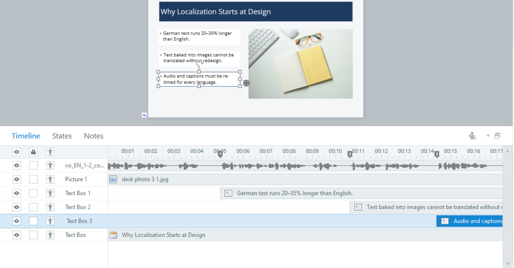
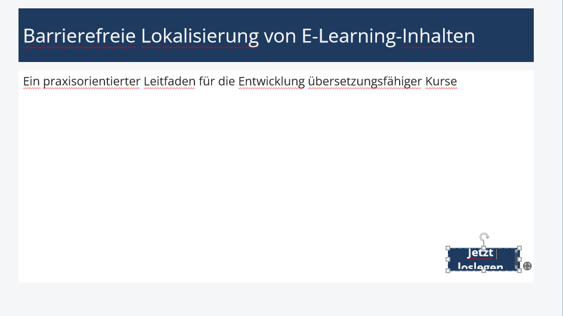
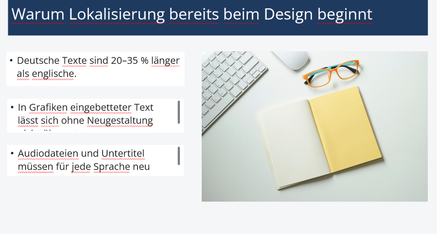
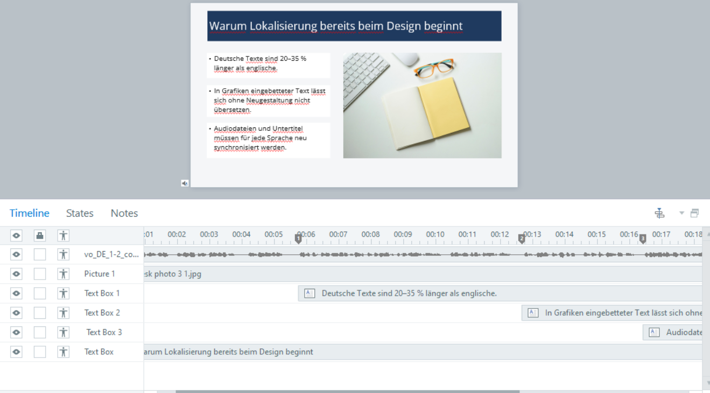
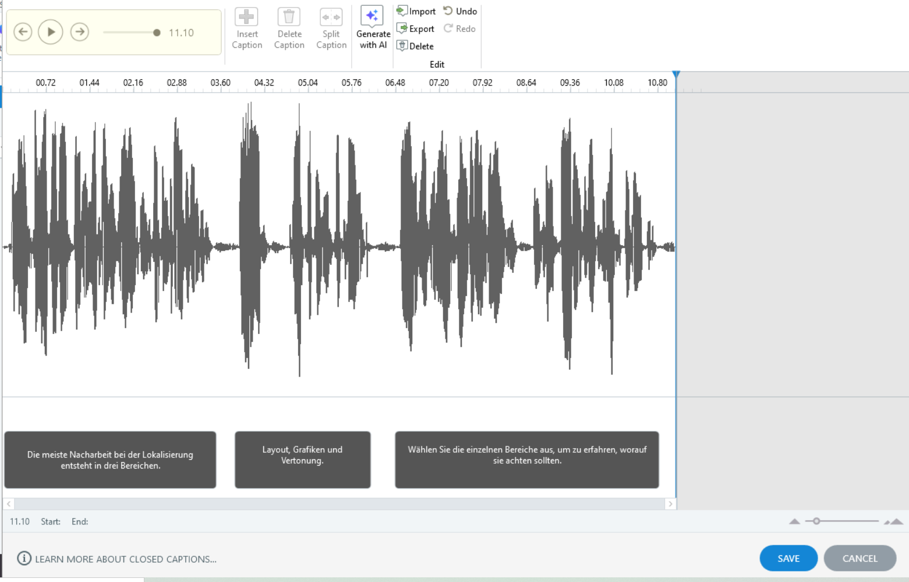

What breaks when a course changes language.
A complete English-to-German roundtrip in Articulate Storyline, built as a self-directed sample: translation export, reimport, layout repair, voiceover replacement, cue-point resynchronisation and caption cleanup. Not a translation exercise — a technical one. The module's subject is the process it went through.
Localization problems don't start in translation.
When an e-learning course goes into a second language, the translation itself is usually the smallest part of the job. What takes the time is everything the export doesn't touch: layouts sized for the source language, audio locked to a timeline that no longer matches, captions in one language sitting under a voiceover in another, and interface labels that live outside the translation file entirely.
I built a short English module with deliberate weak points — a tight button, a text box with no headroom, timed objects anchored to cue points — and then put it through a full German localization to see exactly what would break and what it would cost to fix. Every finding below came out of the process, not out of a checklist I had beforehand.
Five stages, five kinds of breakage.
Build the source and freeze it
Six slides in English: title, content, a three-tab layer interaction, a graded question, a results slide and a summary. Variables, triggers and layers named consistently (btn_Tab01, lyr_Tab01, vo_EN_1-2_content) so that anything left un-updated after the language swap is visible at a glance.
Voiceover generated per slide with closed captions, timed objects anchored to cue points rather than fixed seconds. The source file was then copied and locked as an untouched reference — every later comparison runs against it.

Export and audit before translating
The Word and XLIFF exports came out at 51 strings across six slides — including slide notes, alt text, feedback layers and layer content. Reviewing the export before sending it out surfaced two things worth catching early.
Quiz result buttons (Retry Quiz, Review Quiz) never appear in the export. They are player labels, held in a separate label set. Closed captions are the same: their own import/export path, entirely outside the translation document. On a project where someone has quoted for "the translation export," that is unbudgeted work.
Slide names appear in the export alongside learner-facing text. They are internal identifiers; translating them makes the project file unnavigable for whoever maintains it next. Menu entries look identical in the export but are learner-facing and should be translated. Two near-identical fields, opposite handling — worth flagging to translators explicitly.
Reimport and repair the layout
German text expansion did what it always does. The primary button broke across two lines and overflowed its shape. Two of three content text boxes clipped their last line and grew scrollbars. The results slide lost its master formatting on import.
The most useful break was one I hadn't engineered: Storyline's own German player labels didn't fit Storyline's own buttons. "Quiz noch einmal ansehen" spilled out of the button it belongs to — a shipped default, broken by the same mechanism the module is about.


Editing target text to fit a container means the target audience gets a different message than the source audience. Where a client's subject-matter experts own the translation, it isn't an option at all. The container gets resized; the text stays as approved.
Replace the audio and resynchronise
Six German clips replaced the English ones using Replace Audio rather than delete-and-insert, which preserves object naming and any triggers attached. Then the actual work: every cue point had moved out from under the narration, and every object anchored to one had to follow.
| Slide | English | German | Delta | Change |
|---|---|---|---|---|
| 1.1 | 8.3 s | 11.0 s | +2.7 s | +33% |
| 1.2 | 21.4 s | 24.0 s | +2.6 s | +12% |
| 1.3 | 8.2 s | 11.0 s | +2.8 s | +34% |
| 1.4 | 7.2 s | 6.0 s | −1.2 s | −17% |
| 1.5 | 5.0 s | 6.0 s | +1.0 s | +20% |
| 1.6 | 10.4 s | 15.0 s | +4.6 s | +44% |
Average expansion across the six clips: +29%, in line with the 20–35% rule of thumb the module itself teaches.
Slide 1.4 came back 17% shorter. That leaves trailing silence, and any object anchored near the end of the timeline now fires too early relative to the narration. Shorter needs the same slide-by-slide attention as longer — which is why partial playback is not a QA method.

Captions, and why automation isn't the finish line
After the audio swap, captions were still in English under German narration — a defect no learner would miss and no export would have caught. Regenerating them automatically produced correct German text, but the automatic segmentation split lines mid-clause: "Probleme bei der Lokalisierung" / "entstehen selten erst bei der Übersetzung." Subject in one caption, predicate in the next.
For learners who depend on captions, that is a genuine accessibility problem rather than a cosmetic one. Cleaning it up means merging fragments, breaking at sense boundaries and keeping display times inside roughly one to six seconds.
Generation is fast; review is not. Budgeting for the generation step alone and treating the output as final is the most common way caption work gets under-scoped.

Four things I'd tell a client before quoting.
Audit the export first
Open the translation file before it goes out. Confirm what's in it — and, more usefully, what isn't. Player labels and captions almost always sit outside it, and finding that out mid-project turns into unpaid rework.
Resize containers, not content
Approved target text stays as approved. Where translation is owned by the client's subject-matter experts, editing it to fit isn't a decision the build side gets to make.
Structural fixes belong in the source
Rebuilding an interaction in the target file makes versions diverge and guarantees the same fix gets repeated for every additional language. Change the source, then reimport.
Play every slide to the end
Desynchronisation is invisible in a static review and easy to miss when spot-checking. Both longer and shorter target audio break timing, in different ways.
A working QA checklist.
Everything above, condensed into the list I now run before, during and after a localization pass — export audit, layout checks, audio delta tracking, caption review and pre-delivery testing. Written for my own use; usable by anyone doing the same job.